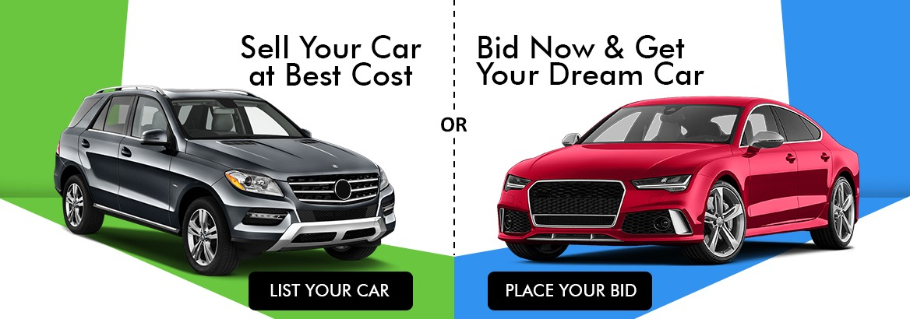

Buying a car is an experience in itself. You test drive a number of cars, compare features to decide which variant to buy and then get on the table to negotiate a good deal. But, it’s also easy to get carried away by emotions to end up with a wrong decision. To avoid such a scenario, it is recommended you conduct some research before heading to the dealership. Here’s why you should do some groundwork:
So it’s finally time to bring home the car of your choice. But,
before you take the keys and celebrate
is an all-important step to be taken care of – paperwork
I've had this doubt in my mind for a while now. What happens when we book a car? So we booked it in a showroom, what next? How does the the manufacturer know? What is the procedure followed? By the time the loan processing is done and down-payment paid, is the car being manufactured or is put on hold? Related posts shed some information on whether the cars can be tracked from factory to showroom, but are not reliable and we tend to believe the sales rep er booked our car from more than the manufacturer themselves. So can anyone shed some light on this topic? Mods : i did a search in Team-BHP but was usually getting the "I booked my car thread" or "cancel booking" or "bookings open" threads. If this is a redundant post, please move to specific section.